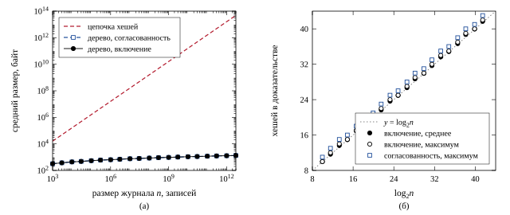
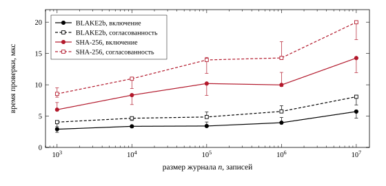
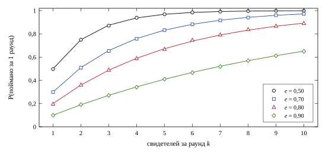
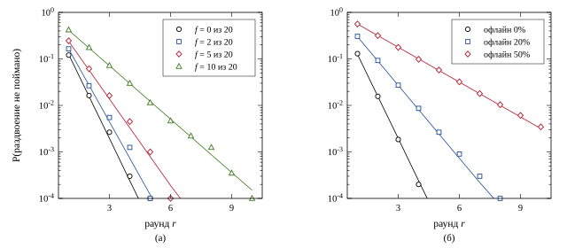
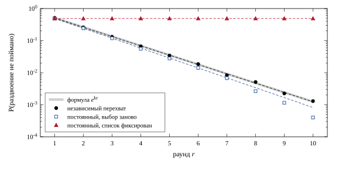

Оператор журнала, будь то банк, биржа или лог сертификатов, может переписать прошлые записи или показывать разным клиентам разные истории. Второе называют раздвоением (split view, equivocation). Заметить его труднее всего, потому что каждый клиент по отдельности видит журнал, который проходит все проверки.
Меня интересовало, выполняются ли на практике обещания дерева истории, то есть логарифмический размер доказательств и обнаружение любого изменения уже виденной истории. Отдельно я хотел посчитать, сколько сверок со свидетелями нужно лёгкому клиенту, чтобы поймать раздвоение с вероятностью 99%, и найти условия, при которых простая оценка этой вероятности ошибается.
Первую часть я считаю закрытой, если реализация совпадает с эталонными векторами и с независимой реализацией, а длины доказательств равны ⌈log2 n⌉. Вторую часть считаю закрытой, если формула и симуляция на настоящих доказательствах расходятся не больше статистической ошибки и каждое расхождение объяснено.
Поводом стал мой проект netbank. В нём свидетели переисполняют блоки, и телефону клиента приходится верить им на слово.
Crosby и Wallach предложили дерево истории [1]. Это дерево Меркла, которое растёт только вправо и даёт доказательства двух видов логарифмического размера: что запись принадлежит журналу и что новая версия журнала продолжает старую (у авторов они называются инкрементальными). Оператора авторы считают недоверенным, проверяют его аудиторы, и для защиты от раздвоения аудиторы должны обмениваться полученными корнями. Certificate Transparency закрепила ту же структуру в RFC 6962 [2], а алгоритмы проверки, которые я использую, взяты из RFC 9162 [3]. Оба RFC хешируют с разделением доменов: лист как H(0x00 ‖ d), узел как H(0x01 ‖ l ‖ r).
Обмен корнями (gossip) решают отдельно. Chuat и соавторы [6] предложили для CT протоколы gossip и оценили их симуляцией на реальном трафике. CONIKS [5] решает похожую задачу для каталога ключей и называет стоимость аудита около 2,5 КБ в день на провайдера; эту цифру я знаю из аннотации и не проверял. Oxford, Parker и Ryan [7] проверяли протоколы gossip для CT вероятностной верификацией моделей, их работу я видел только по аннотации. Моя задача в разделе 4.4 уже: одна жертва, один оператор и две простые стратегии перехвата.
Устройство таких логов понятно объясняет Russ Cox [4]. Это запись в блоге; я читал её для понимания, а алгоритмы брал из RFC.
Библиотека tamperlog написана на C++20 и занимает 524 строки вместе с заголовками. Дерево хранит хеши всех полных поддеревьев по уровням: в levels_[h][i] лежит корень поддерева из 2h листьев, начиная с листа i·2h. При добавлении записи хешируется лист и поднимаются новые полные поддеревья, в среднем один узел на запись. Корень любой прошлой версии и оба доказательства строятся по рекурсивным определениям из раздела 2.1 RFC 6962, а хеш произвольного отрезка собирается из готовых полных поддеревьев. Так можно делать, потому что в рекурсии RFC поддерево размера 2h всегда начинается с индекса, кратного 2h. Проверки на стороне клиента повторяют разделы 2.1.3.2 и 2.1.4.2 RFC 9162 шаг в шаг.
Основной хеш BLAKE2b-256 взят из Monocypher. SHA-256 я написал сам по FIPS 180-4 [10], потому что эталонные векторы посчитаны на ней, а в Monocypher её нет. Подписанный корень (signed tree head) состоит из размера, времени в миллисекундах, корня и подписи Ed25519 [9] и занимает 112 байт.
Все замеры сделаны на MacBook Pro 2019: Intel Core i9-9880H 2,3 ГГц, 8 ядер, L3 16 МБ, 32 ГБ памяти, macOS 15.7.7. Компилятор Apple clang 17.0.0, CMake 4.4.4, сборка Release (-O3), один поток. Скрипты работают на Python 3.14.6 без сторонних пакетов. Monocypher взят из проекта netbank; в его заголовке вместо номера версии стоит __git__, API соответствует ветке 4.x. Эталонные векторы взяты из transparency-dev/merkle, коммит c39fbf3 от 12.10.2026 [8]. Результаты в каталоге results/ получаются такими командами:
cmake -S . -B build && cmake --build build -j8 ./build/tests # корректность python3 -I crosscheck/crosscheck.py build/tamperlog 64 ./build/attacks 1000 > results/attacks.csv ./build/bench sizes > results/proof_sizes.csv ./build/bench timing > results/timing_run1.csv # и run2, run3 ./build/fork_sim 20000 > results/fork_sim.csv python3 -I scripts/figures.py # рисунки и сводка
Тесты выполняют 85 957 проверок. Для всех деревьев до 70 записей на обоих хешах каждое доказательство включения и согласованности проходит проверку, его длина совпадает со счётной функцией, а изменение одного бита в любом элементе доказательства приводит к отказу. Корни деревьев из 0…8 записей совпадают с эталонными, SHA-256 сходится с векторами FIPS, включая сообщение из миллиона символов «a», ключ Ed25519 совпадает с TEST 1 из RFC 8032.
Эталонных векторов 184, из них 172 негативных. С первого раза совпали 183. Причина расхождения была в моей обвязке: корни в одном векторе заданы заглушками по 12 байт («don't care 2»), Go сравнивает их побайтно, а мой разборщик отбрасывал всё, что короче 32 байт. После исправления обвязки совпали 180 векторов. Оставшиеся четыре касались сути: я считал доказательство согласованности от пустого дерева (размер 0) тривиально верным. Эталон считает это ошибкой, и RFC 9162 определяет проверку только для 0 < first < second. Я перешёл на поведение RFC, и после этого совпали все 184.
Независимую сверку я написал на Python прямо по рекурсивным формулам RFC, без кэша поддеревьев и без общего кода с C++. Совпали бит в бит 200 длин SHA-256 вокруг границ блока, 64 корня, 2080 доказательств включения и 2016 доказательств согласованности для всех деревьев до 64 записей.
Длины доказательств для n до 3·1012 я считал той же рекурсией без хеширования, поэтому строить такие деревья не понадобилось. На построенных деревьях до 107 эта функция совпала с настоящими длинами во всех 2000 выборках на каждый размер. Для каждого n бралось 2000 случайных индексов и старых размеров. Цепочку хешей я посчитал аналитически: чтобы связать запись с головой или старую голову с новой, нужны все промежуточные звенья, в среднем n/2 хешей.

| n | ⌈log2 n⌉ | включение, среднее, байт | согласованность, макс., хешей | цепочка хешей, среднее |
|---|---|---|---|---|
| 103 | 10 | 319 | 11 | 16,0 КБ |
| 106 | 20 | 639 | 21 | 16,0 МБ |
| 109 | 30 | 958 | 31 | 16,0 ГБ |
| 1012 | 40 | 1279 | 41 | 16,0 ТБ |
Оценка 32·⌈log2 n⌉ байт подтвердилась с одним уточнением. Самое длинное доказательство включения содержит ровно ⌈log2 n⌉ хешей. Доказательство согласованности бывает на хеш длиннее, если старый размер не равен степени двойки, потому что тогда в него попадает хеш старого поддерева. Средние немного ниже максимума, так как у правого края дерева ветви короче.
Записи в бенчмарке длиной 100 байт, примерно как строка банковской операции. Время доказательств в таблице 2 дано как медиана (p50) по 2000 случайным запросам. Я прогнал бенчмарк три раза подряд, и результаты разошлись до 25%, вероятнее всего из-за турбобуста и нагрева ноутбука (отдельно я это не проверял). Поэтому в таблице указан диапазон от минимума до максимума по трём прогонам.
| хеш | n | добавление, нс | проверка включения, мкс | проверка согласованности, мкс |
|---|---|---|---|---|
| BLAKE2b | 103 | 775–973 | 2,41–3,00 | 3,31–4,17 |
| 105 | 618–742 | 3,35–4,06 | 4,78–5,68 | |
| 107 | 653–738 | 4,69–5,75 | 6,79–8,29 | |
| SHA-256 | 103 | 1441–1802 | 6,00–7,17 | 8,02–9,50 |
| 105 | 1258–1487 | 8,30–10,20 | 11,84–14,38 | |
| 107 | 1266–1446 | 11,95–14,35 | 17,20–20,00 |

Время проверки растёт пропорционально log2 n. В первом прогоне время проверки включения, делённое на длину доказательства, равно 0,241 мкс при n = 103 и 0,242 мкс при 107; это цена одного хеша узла BLAKE2b. На SHA-256 выходит около 0,60 мкс на узел. Моя SHA-256 написана на простом C++ без SIMD, инструкций SHA у этого процессора нет, и с OpenSSL я её не сравнивал. Проверка согласованности примерно в 1,4 раза дороже проверки включения, потому что алгоритм вычисляет сразу два корня, старый и новый.
На сервере дерево занимает ровно 2n − popcount(n) хешей, при n = 107 это 19 999 992 хеша, или 640 МБ. Процесс расходует больше из-за запаса ёмкости у std::vector; резидентную память (RSS) я не измерял.
Генерация доказательства на сервере при переходе от 106 к 107 подорожала примерно на 60% (с 2,18 до 3,49 мкс в первом прогоне), хотя длина доказательства выросла только на 18%. Я предположил промахи кэша, ведь дерево в 640 МБ в 40 раз больше L3. Для проверки я построил оба дерева и сравнил запросы по случайным индексам с запросами по одному индексу подряд. Холодный кэш добавил 0,40 мкс при 106 и 0,47 мкс при 107, почти одинаково, так что скачок им не объясняется. В том же опыте случайные индексы при 106 дали 2,67 мкс вместо прежних 2,18, и по этой разнице я заметил разброс между прогонами. Скорее всего, скачок в основном вызван этим разбросом, а кэш добавляет около 18% при обоих размерах. Уверенность у меня средняя, потому что трёх прогонов для такого вывода мало.
Подпись головы стоит больше, чем вся работа с деревом. Ed25519 из Monocypher подписывает за 42 мкс и проверяет за 122 мкс (медиана; три прогона по 3000 операций дали 122,0–122,1 мкс). Одна сверка на стороне клиента включает проверку подписи и одного доказательства согласованности, в сумме около 130 мкс, и 94% этого времени уходит на подпись. Ускорять клиент имеет смысл с неё.
Клиент помнит подписанную голову версии m честного журнала и индекс своей записи. Оператор подделывает журнал в той части, которую клиент уже видел (индекс меньше m), показывает новую голову и отвечает на запросы доказательств. Он пробует две стратегии: доказательства, честно посчитанные по подделке, и доказательства из настоящего журнала. Журналы содержат от 4 до 600 записей, на каждую атаку приходится 1000 случайных случаев, и ещё 1000 случаев составляют контрольную группу без атаки.
| атака | согласованность отклонена | запись клиента пропала | ложный приём |
|---|---|---|---|
| контроль, без атаки | 0 | 0 | 0 |
| переписывание записи | 1000 | 28 | 0 |
| удаление записи | 1000 | 34 | 0 |
| перестановка двух записей | 1000 | 0 | 0 |
| вставка задним числом | 1000 | 0 | 0 |
| откат к меньшей версии | 1000 | 506 | 0 |
| форк после общего префикса | 1000 | 530* | 0 |
* При форке запись клиента пропадает, только если она лежит после точки расхождения.
Проверка согласованности отклонила все 6000 подделок, а честные журналы ни разу не были отклонены. Второй столбец показывает, что дала бы проверка одного лишь присутствия своей записи. Переписывание она поймала бы в 28 случаях из 1000, когда подделана именно запись клиента. Перестановку и вставку задним числом она не ловит вовсе, потому что запись остаётся в журнале на другом месте. Доказательство включения подтверждает наличие записи, а неизменность истории подтверждает только проверка согласованности.
Отдельно я воспроизвёл атаку, от которой защищают префиксы 0x00/0x01. Без префиксов журнал из четырёх записей и журнал из двух «записей» x0 = H(d0) ‖ H(d1), x1 = H(d2) ‖ H(d3) имеют одинаковый корень (в обоих случаях f6cb0039aa1ef960…), и внутренний узел удаётся выдать за запись. С префиксами корни различаются. Подписанная голова содержит размер, поэтому эту подделку поймал бы и он. Уязвимой без префиксов остаётся система, которая где-нибудь хранит корень без размера.
Оператор ведёт две истории с общим префиксом в 200 записей. Историю A видят все, историю B видит только жертва. За раунд обе вырастают на 8 записей, и B всегда длиннее на 3. У каждого из M свидетелей есть подписанная голова A. В каждом раунде жертва, если она онлайн, выбирает k разных свидетелей и сверяет с ними головы. Сверка ничего не даёт, если свидетель в сговоре и держит голову B или если оператор перехватил ответ и подменил голову. Дошедшая сверка запускает настоящую проверку: при равных размерах сравниваются корни, при разных клиент требует доказательство согласованности. Оператор предъявляет доказательства из обеих историй, и раздвоение считается пойманным, если ни одно не прошло проверку. Перед симуляцией я выполнил эту проверку для всех 10 раундов, и она поймала раздвоение во всех десяти. Каждая конфигурация считалась по 20 000 испытаний из 10 раундов.
При независимом перехвате каждой сверки с вероятностью e раунд проходит впустую с вероятностью ek, поэтому
Это гипотеза H3 из плана исследования. На сетке k = 1…10, e = 0…0,9, r = 1…10 (1000 точек, M = 1000) симуляция совпала с (1), наибольшее отклонение составило 0,0092. В одной ячейке (k = 2, e = 0,8) на раундах 8 и 9 отклонение достигло 3,7 стандартной ошибки. Точки одной ячейки с разными r считаются по общим испытаниям, поэтому это одно отклонение. Формула для этой ячейки точная, и я перезапустил симуляцию с другим зерном генератора. Отклонение той же ячейки уменьшилось до 1,3 ошибки (0,9808 при ожидаемых 0,9820), наибольшее по сетке стало 0,0082, а самое большое в единицах ошибки оказалось в ячейке k = 8, e = 0,5, r = 2. Там на 20 000 испытаний ожидается 0,3 промаха, и нормальное приближение к такой ячейке неприменимо. Систематического расхождения я не вижу, хотя формального теста по всей сетке не делал. В базовой модели совпадение почти гарантировано заранее, потому что симуляция проверяет мой код протокола и генератор случайных чисел. Содержательный вопрос в том, при каких условиях (1) перестаёт работать.

Я проверил три отклонения от модели при M = 20 и k = 3, вывел для каждого точную формулу (выбор свидетелей без повторов даёт гипергеометрическое распределение) и сравнил её с симуляцией. Везде совпадение в пределах шума, поэтому дальше речь о том, насколько (1) отличается от точной формулы.
Сговор свидетелей (рис. 4а) снижает вероятность поимки за раунд, но с каждым раундом она всё равно растёт. При 10 подкупленных свидетелях из 20 и e = 0,5 первый раунд ловит раздвоение с вероятностью 0,58 (формула (1) даёт 0,875), а к десятому раунду вероятность достигает 0,9999. На лог-шкале кривые остаются прямыми, то есть процесс по-прежнему геометрический, только знаменатель прогрессии хуже. Так же действует офлайн жертвы (рис. 4б): при 50% офлайна первый раунд даёт 0,44, десятый 0,997.

При постоянном перехвате оператор навсегда контролирует связь с долей e свидетелей. Если жертва в каждом раунде выбирает свидетелей заново, результат даже немного лучше формулы (1): при выборе без повторов вероятность попасть только на перехваченных равна C(16, 3)/C(20, 3) = 0,491, а по формуле 0,83 = 0,512. Если же жертва однажды выбрала трёх свидетелей и сверяется только с ними, раунды перестают быть независимыми. Вероятность поймать раздвоение остаётся на уровне первого раунда: 0,51 при e = 0,8 и 0,89 при e = 0,5 (рис. 5), тогда как по формуле (1) к десятому раунду она дошла бы до 0,999. Формула предполагает независимость раундов, и фиксированный список свидетелей это предположение нарушает.

Из этого можно посчитать нагрузку на лёгкий клиент. При независимом перехвате значение имеет только общее число сверок c = kr, и для 99% нужно c ≥ ln 0,01 / ln u, где u обозначает долю бесполезных сверок. Одна сверка стоит 112 байт головы и в среднем 958 байт доказательства при n = 109.
| перехват e | сверок, φ = 0 | трафик, КБ | сверок, φ = 0,25 | трафик, КБ |
|---|---|---|---|---|
| 0,3 | 4 | 4,3 | 7 | 7,5 |
| 0,5 | 7 | 7,5 | 10 | 10,7 |
| 0,7 | 13 | 13,9 | 19 | 20,3 |
| 0,8 | 21 | 22,5 | 29 | 31,0 |
| 0,9 | 44 | 47,1 | 60 | 64,2 |
CONIKS называет для пользователя меньше 20 КБ в день [5]. Системы устроены по-разному, поэтому совпадает только масштаб. Для netbank из таблицы 4 следует правило: телефону хватает 7–10 сверок в сутки, и свидетелей для каждой сверки нужно выбирать случайно заново.
Атаки в разделе 4.3 проверяют конкретные стратегии оператора и не доказывают стойкость. Стойкость дерева опирается на стойкость хеша к коллизиям [1, 2], и её я не проверял.
В модели раздвоения перехват бывает случайным или постоянным. Адаптивный противник, который решает, что перехватывать, по прошлым выборам клиента, может оказаться сильнее, и такого противника я не моделировал. Свидетели в модели не обмениваются головами и не следят друг за другом. В настоящей системе это добавило бы защиты, поэтому таблица 4 скорее завышает нужное число сверок, если остальная модель верна.
Симуляция раздвоения шла на журналах до 340 записей. Исход проверки определяется устройством доказательства, и размер журнала на него влиять не должен. Это подтверждают полные тесты до 70 записей и случайные до 600; на миллиардах записей я этого не проверял.
Все замеры времени сделаны на одном ноутбуке с разбросом до 25% между прогонами и описывают только эту машину. Сравнивать по ним BLAKE2b и SHA-256 в целом нельзя, потому что моя SHA-256 не оптимизирована, а BLAKE2b из Monocypher написан на переносимом C. Код сверен с двумя независимыми реализациями, с Go через эталонные векторы и с Python напрямую, но формально не верифицирован.
Следующим шагом я бы добавил в симуляцию адаптивного противника. Стоит посчитать и схему, в которой свидетели сверяются друг с другом (cosigning), чтобы понять, сколько сверок клиента она экономит. Для netbank нужен лёгкий клиент, который хранит одну подписанную голову и сверяется по таблице 4, и хранение дерева на диске. Ещё я бы измерил SHA-256 из OpenSSL и Ed25519 из libsodium, чтобы понять, какая часть из 130 мкс на сверку приходится на мою реализацию.
[1] Crosby S. A., Wallach D. S. Efficient Data Structures for Tamper-Evident Logging // 18th USENIX Security Symposium. Montreal, 2009. Rice University.
[2] Laurie B., Langley A., Kasper E. Certificate Transparency. RFC 6962. IETF, 2013.
[3] Laurie B., Messeri E., Stradling R. Certificate Transparency Version 2.0. RFC 9162. IETF, 2021.
[4] Cox R. Transparent Logs for Skeptical Clients. research.swtch.com/tlog, 2019. Блог.
[5] Melara M. S., Blankstein A., Bonneau J., Felten E. W., Freedman M. J. CONIKS: Bringing Key Transparency to End Users // 24th USENIX Security Symposium, 2015. P. 383–398.
[6] Chuat L., Szalachowski P., Perrig A., Laurie B., Messeri E. Efficient Gossip Protocols for Verifying the Consistency of Certificate Logs. arXiv:1511.01514, 2015.
[7] Oxford M., Parker D., Ryan M. Quantitative Verification of Certificate Transparency Gossip Protocols // SPC, 2020. Знаю только по аннотации.
[8] transparency-dev/merkle: testonly/constants.go и testdata/{inclusion,consistency}. Google, Apache-2.0. Коммит c39fbf3, 2026.
[9] Josefsson S., Liusvaara I. Edwards-Curve Digital Signature Algorithm (EdDSA). RFC 8032. IETF, 2017.
[10] NIST. Secure Hash Standard (SHS). FIPS PUB 180-4, 2015.
[11] Vaillant L. Monocypher: a small, secure, auditable crypto library. monocypher.org.